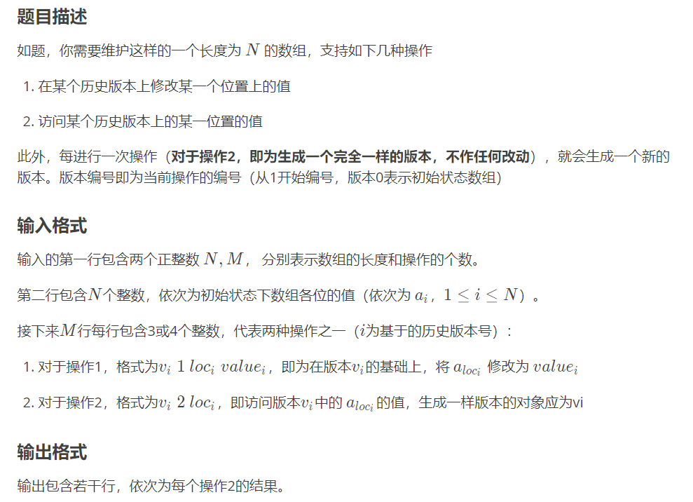

可持久化数组
可持久化的数据结构就是可以访问历史版本的数据结构，那么可持久化数组就是可以访问历史版本的数组
朴素做法
每操作一次数组，就复制一个同样的数组存起来，访问历史版本数据的时间复杂度为O(1)，但是复制操作的时间复杂度为O(n)，并且每次都复制相同大小的数组，非常容易MLE+TLE
空间换时间
有没有什么数据结构能够在复制的时候很快且查询起来不会很久呢？答案是有的，我们可以用可持久化线段树来维护数组信息，查询和复制的时间复杂度都是O(logn)的，且能够有效减少复制时的空间消耗，查询时间也是可接受的。
不会可持久化线段树的建议先去学习一下，可以看看这一篇Blog。
可持久化数组
非叶子结点维护什么信息？
通常线段树的非叶子结点都会维护一些信息，比如区间和、区间最值等，但是对于可持久化数组来说，线段树的非叶子结点并不需要维护任何信息。
是否需要建树？
在学习主席树的时候，我们是不需要建树操作的，或者说编译器帮我们建好了。那是因为主席树维护的是点的权值，初始化时权值都为0，而全局变量初始化为0，所以不需要额外的建树操作。
但是对于可持久化数组来说，我们维护的是普通的线段树而不是权值线段树，所以是需要建树操作的。
所需要的全局变量
首先我们需要一个struct来存储树的结点，同时把线段树的空间开好，这里开了40倍。
struct node {
int l, r, val;
}tree[maxn * 40];
同时需要一个root[]数组维护每一个版本根节点的序号，一个a[]数组存储数组的数据。
用一个int cnt来开辟新的结点
建树
建树操作非常的简单，和普通的线段树没什么差别，但是需要注意的是当前结点序号now需要传引用
// now: 当前结点序号
void build(int l, int r, int &now) {
now = ++cnt;
if (l == r) {
tree[now].val = a[l];
return;
}
int mid = (l + r) >> 1;
build(l, mid, tree[now].l);
build(mid+1, r, tree[now].r);
}
修改
修改前先复制一份pre版本，然后再修改即可
void modify(int l, int r, int pre, int &now, int pos, int val) {
now = ++cnt;
tree[now] = tree[pre];
if (l == r) {
tree[now].val = val;
return ;
}
int mid = (l + r) >> 1;
if (pos <= mid) modify(l, mid, tree[pre].l, tree[now].l, pos, val);
else modify(mid+1, r, tree[pre].r, tree[now].r, pos, val);
}
查询
查询就更加的简单了
int query(int l, int r, int now, int pos) {
if (l == r) return tree[now].val;
int mid = (l + r) >> 1;
if (pos <= mid) return query(l, mid, tree[now].l, pos);
else return query(mid+1, r, tree[now].r, pos);
}
洛谷P3919
一道可持久化数组的模板题洛谷P3919

// 样例输入
5 10
59 46 14 87 41
0 2 1
0 1 1 14
0 1 1 57
0 1 1 88
4 2 4
0 2 5
0 2 4
4 2 1
2 2 2
1 1 5 91
// 样例输出
59
87
41
87
88
46
#include<bits/stdc++.h>
using namespace std;
typedef long long ll;
typedef unsigned long long ull;
#define inf 0x3f3f3f3f
#define INF 0x3f3f3f3f3f3f3f3f
#define IO ios::sync_with_stdio(0)
#define DEBUG(x) cout<<"--->"<<(x)<<endl;
typedef pair<int, int> P;
const ll mod = 1e9+7;
const double eps = 1e-9;
const double PI = acos(-1);
const int maxn = 1e6+5;
struct node {
int l, r, val;
}tree[maxn * 40];
int root[maxn], a[maxn];
int cnt;
void build(int l, int r, int &now) {
now = ++cnt;
if (l == r) {
tree[now].val = a[l];
return;
}
int mid = (l + r) >> 1;
build(l, mid, tree[now].l);
build(mid+1, r, tree[now].r);
}
void modify(int l, int r, int pre, int &now, int pos, int val) {
now = ++cnt;
tree[now] = tree[pre];
if (l == r) {
tree[now].val = val;
return ;
}
int mid = (l + r) >> 1;
if (pos <= mid) modify(l, mid, tree[pre].l, tree[now].l, pos, val);
else modify(mid+1, r, tree[pre].r, tree[now].r, pos, val);
}
int query(int l, int r, int now, int pos) {
if (l == r) return tree[now].val;
int mid = (l + r) >> 1;
if (pos <= mid) return query(l, mid, tree[now].l, pos);
else return query(mid+1, r, tree[now].r, pos);
}
int main() {
int n, m;
scanf("%d%d", &n, &m);
for (int i=1; i<=n; i++) scanf("%d", &a[i]);
build(1, n, root[0]);
for (int i=1; i<=m; i++) {
int ver, opt;
scanf("%d%d", &ver, &opt);
if (opt == 1) {
int pos, val;
scanf("%d%d", &pos, &val);
modify(1, n, root[ver], root[i], pos, val);
} else {
int pos;
scanf("%d", &pos);
printf("%d\n", query(1, n, root[ver], pos));
root[i] = root[ver];
}
}
return 0;
}